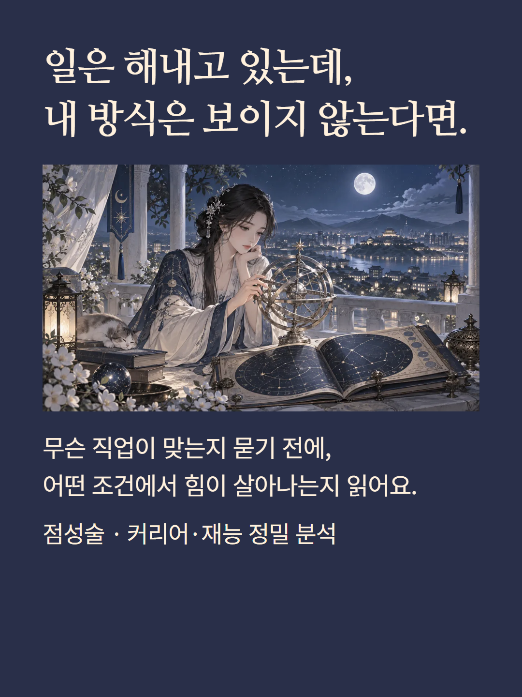
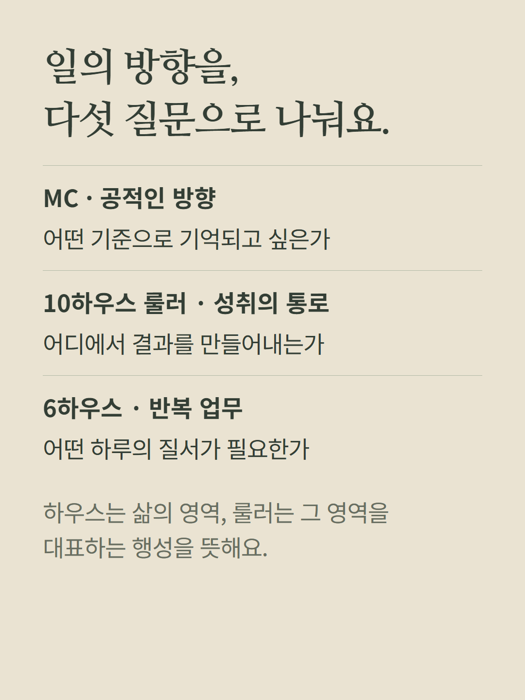
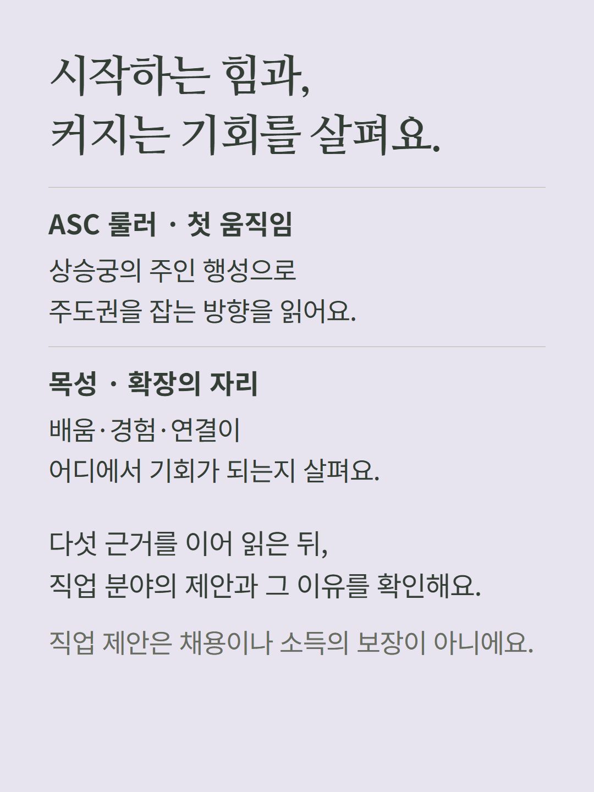
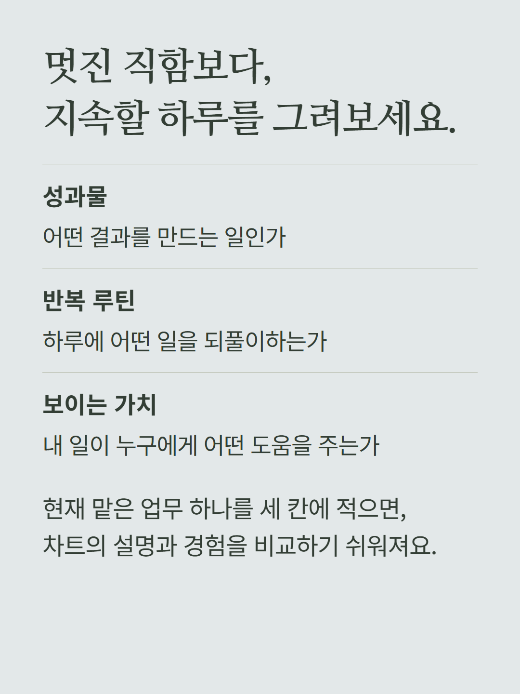
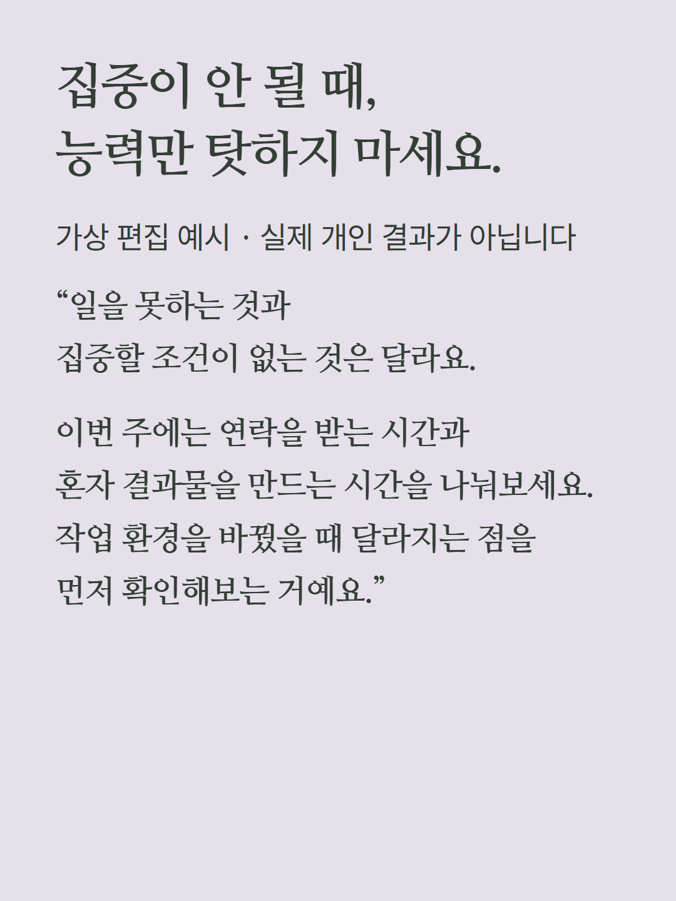
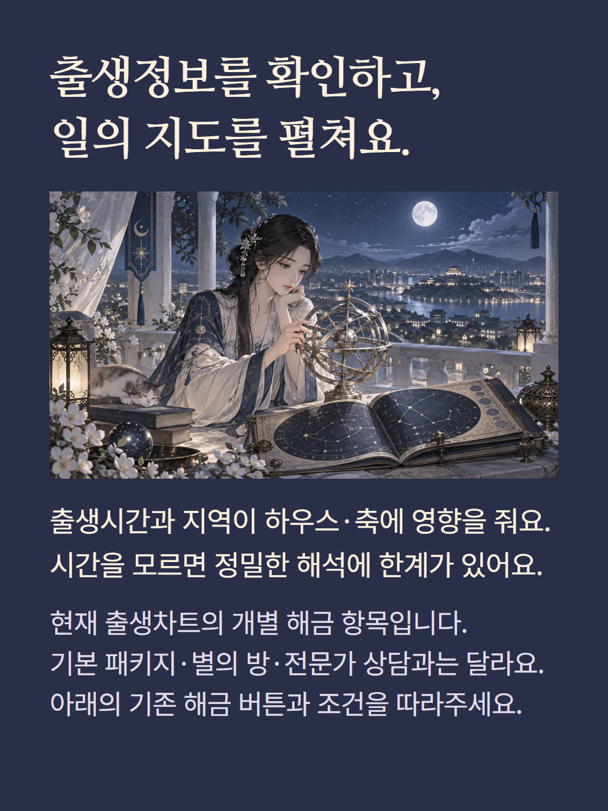

출생차트의 MC·10하우스 룰러·6하우스·ASC 룰러·목성으로 일의 방향과 업무 환경을 읽는 개별 해금 항목입니다. 직업 제안은 상징적 성향의 해석이며 채용·소득·적성을 보장하지 않습니다. 출생시간과 지역을 확인해야 하우스와 축을 정밀하게 읽을 수 있습니다. 기본 심층 패키지, 봉인된 별의 방, 전문가 상담과는 다른 항목입니다. 예시는 가상 편집입니다. 기존 가격과 결제·해금 조건을 유지합니다.